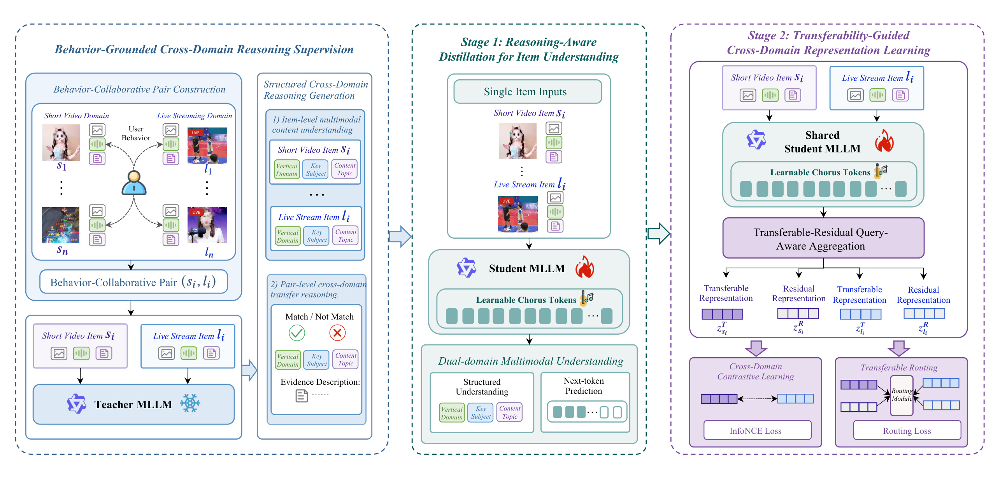
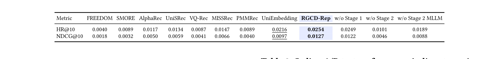
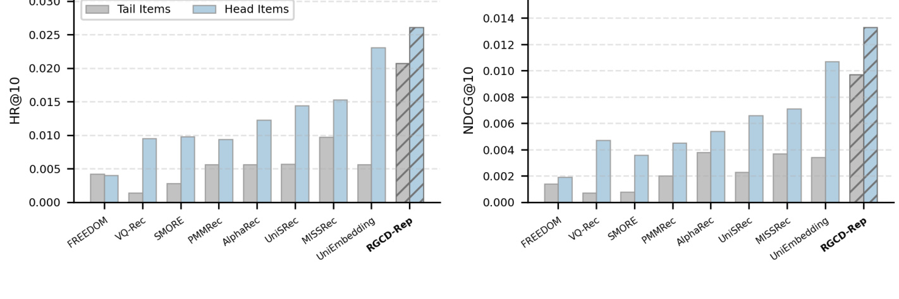
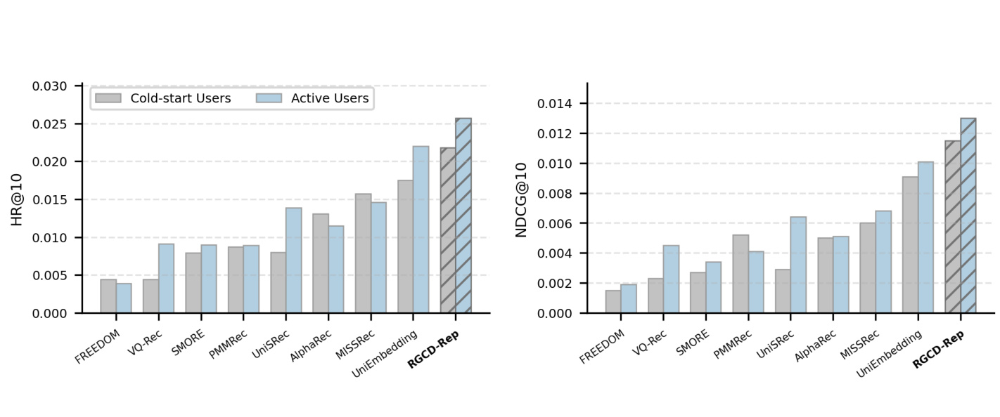
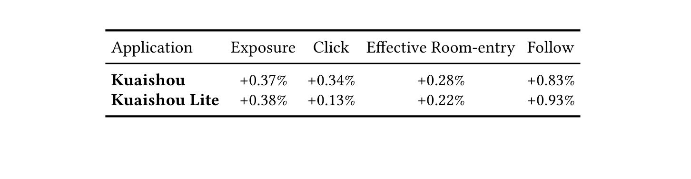

Bridging Short Videos and Live Streams: Reasoning-Guided Multimodal LLMs for Cross-Domain Representation Learning 是快手团队在跨域直播推荐上提出的 RGCD-Rep。论文入口：arXiv:2606.04448。arXiv 页面日期为 2026/06/03，PDF 首页和元数据均显示作者来自 Kuaishou Technology。代码或独立项目页本轮未在 arXiv 页面中核验到；论文给出的可复核信息集中在方法、离线实验和线上 A/B 表格中。
这篇论文的问题非常工业化：短视频域有高流量和密集行为，直播域是转化场景但反馈稀疏，直接把短视频兴趣迁移到直播推荐可以缓解冷启动和长尾，但短视频与直播的语义、消费意图和互动机制并不总是一致。RGCD-Rep 的核心不是简单把多模态 embedding 拼到召回模型里，而是先让大 MLLM 以链式推理方式判断短视频和直播之间哪些兴趣因素可以迁移，再把这种结构化推理蒸馏到轻量学生 MLLM，最后把学生输出拆成可迁移表征和域残差表征，用离线生成的可迁移表征接入线上直播召回。
1. 背景和问题
短视频与直播在同一个平台生态中经常共存，但二者对推荐系统的信号密度完全不同。短视频内容短、消费成本低、曝光量大，用户会留下观看时长、完播、点赞、评论、分享等密集反馈；直播内容持续时间长、消费意图更强，进入直播间、停留、送礼、关注主播等反馈更接近业务转化，却因为用户进入频次低、主播供给变化快、直播间生命周期短而更稀疏。论文把这个差异看成源域到目标域的表示迁移问题：短视频域承载丰富兴趣，直播域需要更强的召回补充，如果能把短视频兴趣中真正可迁移的部分提取出来，就能给直播召回提供额外候选。
传统跨域推荐通常依赖共享用户表示、跨域交互图、序列迁移或预抽取的视觉/文本特征。它们的问题在于，多模态内容本身很复杂，短视频和直播又不是同一种内容对象。一个用户看健身短视频，可能会愿意进入健身直播，也可能只是消费短内容而不想看长时互动；一个用户在短视频里关注游戏剪辑，迁移到直播时也许需要区分电竞赛事、主播人设、抽奖活动和互动氛围。仅靠共现频率会把很多弱相关甚至误相关的对拉近，导致 negative transfer。仅靠预训练视觉或文本 embedding 也容易停留在表面内容相似，难以解释“这个短视频兴趣为什么能转成某个直播间兴趣”。
论文引入 MLLM 的动机就在这里。多模态大模型可以同时读视频帧、OCR/ASR、标题和元信息，并用推理过程把内容拆成垂类、主体和主题，再判断短视频与直播之间的匹配关系。这个能力如果直接用于线上召回显然太贵：直播推荐需要覆盖海量物品和用户请求，不可能每次召回都调用 35B 级别模型做推理。因此 RGCD-Rep 要解决的是两个冲突目标：一方面要借用 MLLM 的多模态理解和跨域推理能力，另一方面又要把最终表征变成可离线计算、可存入 item feature system、可通过近邻索引用于召回的轻量向量。
这篇论文的业务场景也决定了它不能只报告离线排序指标。直播召回的真正问题包括目标域物品长尾、用户直播反馈冷启动、线上多指标联动和新通道成本。如果方法只在随机划分的 matching 数据集上提升一点 HR@10，但不能说明 tail item、cold-start user 和在线曝光/点击/进房/关注是否改善，就很难证明它是工业可用方案。论文后半部分正是围绕这些证据组织：先用 Kuaishou 一周真实日志构造离线检索任务，再用主结果表和消融验证组件贡献，然后分别看长尾物品和冷启动用户，最后给出 Kuaishou 与 Kuaishou Lite 的线上 A/B。
我对这篇论文的定位是：它把 LLM4Rec 常见的“语义理解增强推荐”推进到更具体的跨域召回问题。它不是让 LLM 直接给用户推荐直播，也不是把自然语言解释作为展示结果；它把 MLLM reasoning 当成训练监督和表示学习的中间资源。这个设计对工业推荐很关键，因为真正能落地的不是“在线调用大模型”，而是“用大模型制造更好的离线监督，让小模型产出稳定、可索引、可检索的 item representation”。
还需要注意的是，短视频到直播并不是普通的同构跨域迁移。短视频 item 往往是完整内容单元，用户一次观看后即可形成反馈；直播 item 更像一个正在变化的会话，主播状态、实时互动、活动氛围、观众群体和房间热度都会影响用户是否进入和关注。也就是说，同一个“游戏”垂类在短视频中可能意味着精彩剪辑，在直播中可能意味着陪伴、赛事、抽奖或主播关系。RGCD-Rep 把语义维度拆成 vertical domain、key subject 和 content topic，正是为了避免把这种复杂关系压成一个粗糙相似度。
从召回链路看，这个问题还牵涉候选覆盖和后续排序的分工。直播召回需要在很早阶段给排序系统提供足够多、足够相关且足够多样的候选；如果召回阶段因为直播反馈少而漏掉潜在相关直播，后面的排序模型再强也无法补救。短视频域的高密度行为可以扩大候选覆盖，但只有当迁移表征过滤掉域残差时，新增候选才不会变成噪声。论文强调 transferable representation 可以离线计算并进入 nearest-neighbor index，就是把 MLLM 语义能力放在召回可承受的成本边界内，而不是让召回请求承受大模型推理延迟。
这也解释了为什么论文同时关注物品长尾和用户冷启动。物品侧长尾说明很多直播间缺少足够目标域曝光，用户侧冷启动说明很多用户缺少足够直播行为；二者同时存在时，单靠直播日志会让系统在“谁喜欢谁”上双重稀疏。短视频行为提供了一个更密集的兴趣观察窗口，但它必须经过行为强度、教师语义判断和 transfer routing 三重筛选后，才能成为直播召回的可靠桥梁。
2. 方法
2.1 行为协同样本和结构化迁移推理监督
RGCD-Rep 的第一步是从真实用户日志里构造短视频和直播之间的行为协同样本。论文不是用内容相似度先配对，而是收集同一用户在短视频域和直播域的行为：如果用户在同一时间窗口内对某个短视频和某个直播都表现出强兴趣，这两个 item 就可能共享某种偏好因素。这里的关键是“可能”而不是“必然”。行为共现提供了候选迁移关系，但它也会混入偶然共现、热门偏置和短期活动驱动的关系，所以后续还要用 MLLM reasoning 和 routing 去区分可迁移部分。
论文形式化地写成行为协同 pair 数据集：
符号解释：s_i 表示第 i 个短视频 item，l_i 表示与它在用户行为窗口内共现的直播 item，b_i 表示 pair 的行为迁移强度，N_D 是行为协同样本数量。b_i 由两类信号共同决定：一类是 behavioral co-occurrence，即两个 item 在同一用户群、同一时间窗口内共现的频率；另一类是 behavioral intensity，即用户对两个 item 的互动强度。短视频侧使用观看时长、完播率、点赞、评论、分享，直播侧使用观看时长、虚拟礼物、关注、点赞、评论。这个定义把“短视频兴趣是否能补直播”落到用户行为，而不是只依赖内容相似。
随后，冻结的 35B 教师 MLLM 对每个短视频和直播 pair 生成结构化迁移推理。它不是输出自由文本让学生模型盲目模仿，而是先把单个 item 的内容理解拆成三个语义维度：
符号解释：K 是结构化语义维度集合。vertical domain 更接近垂直领域，例如游戏、体育、美妆、知识；key subject 指内容主体，例如主播、商品、赛事、人物、场景；content topic 指具体话题或内容主题。教师 MLLM 对短视频和直播分别输出每个维度的语义标签和证据描述，再在 pair 层面判断每个维度是否匹配。
维度级匹配标签写成：
符号解释：m_i^k 是第 i 个短视频/直播 pair 在第 k 个语义维度上的匹配标签。m_i^k 等于 1 表示教师认为该维度可迁移，等于 0 表示该维度不匹配。这个标签比整体相似度更细，因为它允许“垂类一致但主体不一致”或“主题一致但直播互动意图不同”的情况被表达出来。
教师侧语义迁移分数进一步聚合为：
符号解释：r_i 是从教师推理角度得到的 semantic transferability score，|K| 是语义维度数量。它不是最终训练标签的全部，而是和行为强度 b_i 结合，用来区分高纯度可迁移 pair 与低纯度 pair。这样做的直觉是，行为告诉模型“用户可能同时喜欢这两个对象”，MLLM reasoning 告诉模型“这两个对象在内容语义上为什么可能迁移”。

这张 Figure 1 是理解论文方法的主图。左侧展示行为监督如何从短视频域和直播域抽取 behavior-collaborative pair，再交给教师 MLLM 生成结构化跨域推理。中间是 Stage 1：学生 MLLM 只吃单个 item 输入和 learnable chorus tokens，学习输出垂类、主体、主题等结构化理解，并用 next-token prediction 承接教师的 item-level 知识。右侧是 Stage 2：同一个学生 MLLM 作为共享编码器，短视频和直播各自产生 chorus-token 表征，再通过 transferable-residual query-aware aggregation 拆成可迁移表示和残差表示；可迁移表示进入 InfoNCE 风格的跨域对比学习，残差表示配合 routing loss 吸收低纯度 pair 或域特异因素。最下面的 offline retrieval 含义是，最终线上使用的是已经离线生成并入库的 transferable representation，而不是每次请求都跑教师大模型。图中三段结构也解释了论文标题里的 “Reasoning-Guided”：推理不是部署时的交互式解释，而是监督、训练和表征分解的指导信号。
2.2 由教师 MLLM 到轻量学生 MLLM 的推理感知蒸馏
Stage 1 的目标是把教师 MLLM 的结构化内容理解蒸馏到轻量学生 MLLM。论文特意做了 pair-to-item decomposition，因为如果学生模型每次都要输入短视频和直播 pair，工业部署会变得很重：item 表征无法预先独立计算，召回时也无法把海量直播候选提前建索引。作者因此把教师对 pair 的理解拆成短视频 item 和直播 item 两类单样本，让学生学习“给定一个 item，输出垂类、主体、主题及证据描述”。这一步牺牲了 pair-level 的直接推理输入，但换来了 item-level representation 的离线可生成性。
学生 MLLM 使用 Qwen2-VL-2B-Instruct 初始化，是一个比教师小得多的多模态模型。论文沿用 CREM 风格的 learnable chorus tokens：在输入序列中加入 N_C 个可学习 token，让模型在最后层输出这些 token 的 hidden states。这样做比简单取 CLS 或最后 token 更适合多模态 item，因为 chorus tokens 可以作为一组语义槽位承接垂类、主体、主题、视觉元素和文本线索。
chorus tokens 记为：
符号解释：C 是插入输入序列的 learnable chorus token 序列，c_j 是第 j 个 chorus token，N_C 是 token 数量。论文默认 N_C 等于 16，这意味着每个 item 最终不是一个单点向量，而是一组可被后续查询聚合的 token-level 表征。
学生模型输出的 chorus hidden states 写成：
符号解释：x 可以是短视频或直播 item，H_x 是该 item 的 chorus-token 表征矩阵，h_x^j 是第 j 个 chorus token 的 hidden state，d 是 hidden dimension。后续 Stage 2 的可迁移/残差分解正是基于 H_x 做查询聚合。
Stage 1 的训练目标是标准 next-token prediction：
符号解释：D_item 是从教师 pair-level 推理拆出的 item-level 蒸馏数据集，q_x 是 item x 的多模态指令输入，y_t 是教师结构化答案的第 t 个 token，A_x 是答案长度，theta 是学生 MLLM 参数。这个损失让学生学习“看一个短视频或直播，输出结构化内容理解”的过程。它不是直接优化召回指标，而是给学生模型注入教师的多模态语义解析能力，为 Stage 2 表征学习提供更好的初始化和 token 槽位。
这一步的工程意义在于，把最贵的 35B 教师调用限制在训练数据生成阶段。教师只需要对高置信行为 pair 做离线推理，学生在训练后可以批量处理所有短视频和直播 item。对于直播推荐这种大规模服务，蒸馏不是附加技巧，而是决定能否部署的前提。论文的线上段落也印证了这一点：上线时不是调用教师，而是用训练好的学生 MLLM 离线生成 transferable representations，存入 item feature system。
2.3 共享编码器和可迁移/残差查询聚合
Stage 2 开始时，Stage 1 得到的学生 MLLM 作为短视频和直播共享的编码器。共享权重有两个作用。第一，它把两个域的 item 放入统一语义空间，避免短视频和直播各自学习一套不可比的 embedding。第二，它把 Stage 1 学到的结构化多模态理解迁移到跨域表示学习中。论文写成：
符号解释：f_theta 是共享学生 MLLM 编码器，H_s 和 H_l 分别是短视频 s_i 与直播 l_i 的 chorus-token hidden states。共享编码器并不意味着两个域完全相同，因为后面还有域内独立的 query aggregation 参数，用于分别抽取可迁移和残差信息。
论文最重要的设计是 transferable-residual query-aware aggregation。作者认为，即使用共享 MLLM 编码器，chorus-token 表征仍然会混合两类因素：一类是可以从短视频迁移到直播的兴趣因素，例如垂类、主体、主题和可泛化消费意图；另一类是域残差因素，例如短视频浏览习惯、直播间实时互动、主播关系、活动刺激、礼物行为等。如果不分解，模型可能把域特异因素也拉进跨域对比学习，造成负迁移。
因此，每个 item 的 H_x 会被两个可学习 query 分别聚合。可迁移视图的注意力权重为：
符号解释：q_T 是可迁移视图的 learnable query，H_x q_T 得到每个 chorus token 对可迁移语义的匹配分数，sqrt d 用于缩放，alpha_x^T 是 N_C 维注意力权重。这个权重决定哪些 token 更像跨域共享兴趣。
可迁移表征由加权池化和归一化得到：
符号解释：z_x^T 是 item x 的可迁移 representation，alpha_{x,c}^T 是第 c 个 token 权重，h_x^c 是对应 hidden state，Norm 是归一化操作。最终用于召回索引和跨域对比学习的就是这个可迁移向量。
残差视图采用独立 query：
符号解释：q_R、alpha_x^R 和 z_x^R 对应 domain residual view。残差向量不是无用噪声，它承担的是吸收短视频或直播域特异因素的角色。对于低迁移 pair，如果仍强行把 z_s^T 和 z_l^T 拉近，模型会污染可迁移空间；如果允许残差空间解释这类 pair，就能把“行为共现但语义不宜迁移”的因素从主召回向量中隔离出去。
这个分解是 RGCD-Rep 与普通 multimodal item embedding 的关键差异。普通方法会把 item 内容编码成一个向量，再用跨域监督拉近；RGCD-Rep 先用 MLLM reasoning 提高内容理解质量，再用 query-aware pooling 把“能迁移的语义槽”和“域内残差槽”分开。对于短视频到直播而言，这种分解很自然：用户喜欢某个短视频的游戏题材可能可迁移到游戏直播，但短视频的剪辑节奏、BGM、标题党吸引力不一定能迁移到直播间停留和关注。可迁移/残差分解就是把这两类因素在表示层面拆开。
2.4 跨域对比学习与 transfer routing
有了 z_s^T 和 z_l^T 后，论文用跨域对比学习优化可迁移 embedding。一个 mini-batch 中，每个行为协同 pair 的短视频和直播是正样本，不匹配的另一域 item 是 in-batch negative。短视频到直播方向的损失为：
符号解释：B 是 mini-batch，sim 是 cosine similarity，tau 是温度系数。分子拉近真实行为协同 pair 的可迁移向量，分母用同 batch 的其他直播作为负例。直播到短视频方向同理。
双向对比损失写成：
符号解释：L_con 同时约束短视频检索直播和直播对齐短视频，避免表示只在一个方向上有用。对于线上直播召回，最常用的是从用户短视频兴趣表示去检索直播候选，但双向约束有助于让可迁移空间更稳定。
仅靠 L_con 仍然有问题，因为行为共现不等于真实迁移。论文引入 transferable routing：对于一个 pair，分别计算可迁移空间和残差空间的匹配分数：
符号解释：s_T 衡量 pair 是否应该由可迁移语义解释，s_R 衡量 pair 是否更像域残差或噪声因素。两者的差值进入 sigmoid，得到 pair 属于可迁移空间的概率：
符号解释：P_T 是可迁移路由概率，gamma 是 routing-logit scaling coefficient。若 s_T 明显大于 s_R，P_T 接近 1，说明该 pair 应主要由可迁移表征解释；反之，残差空间更适合吸收它。
路由标签不是人工标注，而是把行为强度和教师语义迁移分数相加：
符号解释：q_i 是联合迁移分数，b_i 来自真实行为共现和互动强度，r_i 来自教师 MLLM 的结构化语义匹配。论文将 q_i 排序，取 top p% 为高纯度可迁移 pair，bottom p% 为低纯度 pair，中间不确定样本不参与 routing loss。这个做法避免对所有 pair 都强行二分类，也符合工业数据中噪声大、边界模糊的现实。
routing loss 为：
符号解释：B_route 是参与路由训练的高纯度和低纯度样本集合，pi_i 是路由标签。pi_i 为 1 时鼓励可迁移空间分数高于残差空间，pi_i 为 0 时鼓励残差空间解释该 pair。它的直觉很清楚：不是所有共现短视频和直播都应该被拉到同一个召回空间，低纯度 pair 应该被隔离。
最终 Stage 2 目标为：
符号解释：lambda_route 控制 routing loss 权重。训练完成后，z_T 是最终 cross-domain transferable item representation。论文实现里 Stage 2 使用 250,000 个样本，batch size 为 64，学习率 1e-4，温度 tau 为 0.05，routing loss 权重 lambda_route 为 0.05，gamma 为 10，p 为 20，最终 transferable embedding dimension 是 1536。
2.5 离线表征到线上召回通道的集成
RGCD-Rep 的部署方式是论文最值得注意的部分。它没有把 MLLM 放到在线请求里，而是训练后离线为所有短视频和直播生成 transferable representations。直播候选侧的向量被存入 item feature system，并建立 cross-domain nearest-neighbor index；用户侧则把用户交互过的短视频 transferable representations 做 mean pooling，形成用户短视频兴趣表示，再通过最大内积或近邻检索召回直播候选。这样 RGCD-Rep 成为直播推荐中的一个新召回通道，而不是替换整套排序系统。
这个集成方式解释了为什么论文强调 transferable representation 而不是 pair scorer。如果模型输出的是短视频/直播 pair 的匹配分数，每次在线召回都需要对大量候选直播做交叉编码，成本不可控；如果输出的是独立 item embedding，就可以离线批量计算、在线快速检索。Stage 1 的 pair-to-item decomposition、Stage 2 的共享编码器和 z_T 选择，都是为这个服务形态设计的。
从推荐系统架构看，RGCD-Rep 可以被理解为“短视频兴趣到直播候选”的桥接召回源。它把用户短视频历史中可迁移的多模态语义压缩成向量，再检索直播 item 的可迁移向量。召回出的候选仍然可以进入后续粗排、精排和重排，与其他直播召回源合并。论文没有展开完整线上多路召回融合细节，但 Table 3 的 A/B 指标说明它确实作为线上 live streaming recommendation system 的 retrieval stage 组件部署。
这种工程设计也带来两个边界。第一，离线 item embedding 的更新频率会影响新直播、新主播和热点事件的覆盖。如果直播内容实时变化很快，离线向量需要足够频繁地刷新，或者配合实时特征补充。第二，mean pooling 用户短视频 transferable representations 是一个简单聚合方式，它适合召回阶段的低成本需求，但可能无法表达用户兴趣的多峰结构。后续如果要进一步提升，可以把用户短视频历史聚类成多个兴趣向量，或让 routing score 参与用户侧兴趣选择，但这些都需要额外服务成本评估。
3. 实验结果
3.1 离线 matching 主结果与消融证据
论文离线实验使用 Kuaishou 2026 年连续一周真实用户行为日志，随机采样 109,523 个同时访问短视频和直播服务的用户。直播域有 98,190 个 item、2,275,888 次交互，平均序列长度 20.78；短视频域有 3,787,061 个 item、24,635,008 次交互，平均序列长度 224.93。这个规模差异本身就说明了问题：短视频 item 和交互远多于直播，直播目标域更稀疏，适合用短视频兴趣补充召回。
实验任务是 matching retrieval。作者把用户交互过的短视频 transferable representations 做 mean pooling 得到用户兴趣向量，再通过最大内积从直播候选中检索，指标使用 HR@10 和 NDCG@10。baseline 分三类：FREEDOM、SMORE、AlphaRec 是单域多模态推荐；UniSRec、VQ-Rec 是跨域单模态推荐；MISSRec、PMMRec、UniEmbedding 是跨域多模态推荐。这个 baseline 选择覆盖了“只用多模态但不跨域”“跨域但语义浅”“跨域多模态但无 MLLM reasoning”三种对照。

Table 2 是论文最核心的离线证据。RGCD-Rep 在 HR@10 上达到 0.0254，在 NDCG@10 上达到 0.0127；最强 baseline UniEmbedding 分别是 0.0216 和 0.0097。论文正文给出的相对提升是 17.59% 和 30.93%。这说明 RGCD-Rep 的优势不仅体现在是否命中目标直播，也体现在排序质量上，因为 NDCG@10 的提升更大。单域多模态方法表现较弱，说明只理解短视频或直播内容不能直接解决跨域迁移。跨域多模态 baseline 更强，说明跨域行为和内容结合确实必要；但 RGCD-Rep 进一步引入教师推理、学生蒸馏和可迁移/残差分解后，仍能超过 UniEmbedding。
消融结果更能解释方法贡献。w/o Stage 1 的 HR@10 是 0.0249，NDCG@10 是 0.0122，下降不大但可见，说明教师到学生的结构化理解蒸馏能提升表征质量，但不是唯一来源。w/o Stage 2 的 HR@10 只有 0.0101，NDCG@10 只有 0.0046，几乎退回弱 baseline 水平，说明真正承担跨域 transferable representation 学习的是 Stage 2。如果没有 transferability-guided training、contrastive learning 和 routing，学生的内容理解不能自动变成直播召回所需的迁移向量。w/o Stage 2 MLLM 的 HR@10 是 0.0189，NDCG@10 是 0.0088，低于完整模型，也说明 Stage 2 中继续使用 MLLM encoder 的多模态 token 表征，而不是换成浅层特征，对最终 matching 有贡献。
3.2 长尾直播内容：从 head 到 tail 的迁移证据
长尾分析把直播 item 按训练集出现频率排序，top 50% 标为 head items，其余标为 tail items。论文指出 tail item interactions 只占全部交互的 10.90%，这意味着直播推荐的内容侧稀疏非常明显：尾部直播间或主播可获得的直播行为少，纯目标域模型很难学习稳定表征。如果短视频域能提供内容和兴趣迁移，收益应该在 tail items 上更有意义。

Figure 2 把 HR@10 和 NDCG@10 分别按 tail/head items 展示。所有方法在 tail items 上都弱于 head items，这符合交互稀疏带来的困难；RGCD-Rep 在两个分组上都最高，并且在 tail items 上的优势更值得关注。直观解释是，长尾直播缺少足够直播侧历史，但直播间的多模态内容、主播主题、活动形式和短视频兴趣之间仍然可能存在迁移关系。RGCD-Rep 通过教师 MLLM 把短视频和直播都拆成垂类、主体、主题，再用行为和语义联合分数控制可迁移空间，能把“短视频看过类似兴趣内容”的信号带给直播召回。相比之下，只用目标域直播行为或浅层内容特征的模型，在 tail 直播上更容易没有足够监督。
这张图也提醒我们，RGCD-Rep 的业务价值不只是提高热门直播召回。直播平台往往需要把新主播、低曝光直播间或长尾内容分发给潜在兴趣用户，否则流量会进一步集中到头部。短视频域的密集行为给长尾直播提供了一个旁路信号：即使某个直播间直播侧互动少，只要它的内容主题能通过 MLLM reasoning 与用户短视频兴趣建立可迁移关系，就有机会进入候选集。这个机制与 Table 3 中 follow 指标提升较大也有呼应，因为关注新主播通常更依赖发现和分发。
3.3 冷启动用户与活跃用户：迁移是否只服务老用户
用户侧分析把测试用户分成 cold-start users 和 active users。论文定义 cold-start user 为预测日前六天没有正向直播反馈、只在预测日产生正向反馈的用户；这类用户占测试集 14.65%。这个定义非常贴近直播业务：很多用户在短视频域很活跃，但并没有稳定直播观看历史。如果模型只能利用直播历史，它对这些用户几乎没有可靠偏好；如果能把短视频兴趣迁移到直播，就应该对 cold-start users 有更明显帮助。

Figure 3 显示 RGCD-Rep 在 cold-start 和 active users 两组上都优于 baseline。更重要的是，论文正文强调相对 strongest baseline 的提升在 cold-start users 上更明显。这说明收益不是简单来自“更好地编码已有直播行为”。对于 active users，模型可以从直播历史中获取较多信号，短视频迁移是补充；对于 cold-start users，短视频历史可能是主要兴趣来源。RGCD-Rep 用短视频 item 的 transferable representations 表达用户兴趣，再检索直播 candidates，正好解决这类用户直播反馈稀疏的问题。
这部分证据对推荐系统很重要，因为 cold-start 用户往往决定新场景渗透率。如果一个短视频用户偶尔尝试直播，系统第一次给出的直播候选是否相关，会影响他是否继续进入直播生态。RGCD-Rep 的设计把直播目标域冷启动转化为跨域兴趣迁移问题：不要求用户先有大量直播反馈，而是从他已经丰富的短视频行为中提取可迁移兴趣。Figure 3 的结果支持这一点，但仍需注意，论文没有进一步细分新用户、回流用户、不同垂类冷启动用户或不同直播消费深度，因此冷启动结论仍是总体层面的。
3.4 线上 A/B：离线表征进入真实直播召回后
线上部署部分说明 RGCD-Rep 已接入 Kuaishou 和 Kuaishou Lite 的 live streaming recommendation retrieval stage，服务数亿用户。部署时，团队从近期生产日志重建训练数据，选约一百万高质量 pair 训练学生 MLLM；训练后，学生 MLLM 离线生成所有短视频和直播的 transferable representations，并存入 item feature system。在线召回时，系统基于用户短视频兴趣从 cross-domain nearest-neighbor index 中检索直播候选，作为新的召回通道。

Table 3 给出一周线上 A/B 指标。Kuaishou 主站曝光 +0.37%、点击 +0.34%、有效进房 +0.28%、关注 +0.83%；Kuaishou Lite 曝光 +0.38%、点击 +0.13%、有效进房 +0.22%、关注 +0.93%。这组指标的意义在于，它覆盖了召回通道最容易影响的曝光，也覆盖点击、有效进房和关注这些更靠近直播业务价值的指标。关注提升最大，说明新通道可能更擅长把用户短视频兴趣迁移到合适主播或直播间，而不只是增加泛曝光。Lite 上点击提升较小但关注提升仍然明显，提示不同应用的人群或流量结构不同，但迁移通道对关注行为仍有稳定帮助。
线上结果也验证了论文强调的低成本部署路径。如果 RGCD-Rep 需要在线调用教师 MLLM 或 pair-level cross encoder，它很难在数亿用户服务中上线；但论文把教师推理变成训练监督，把学生 MLLM 变成离线 item encoder，把最终向量变成近邻索引，可以以常规召回通道形式融入系统。Table 3 因此不只是业务指标表，也是方法设计闭环的证明：Stage 1/Stage 2 训练得到的 z_T 能离线生产，在线检索能带来增量，说明 reasoning-guided representation learning 没有停留在离线 demo。
不过，在线表也有信息缺口。论文没有给出实验流量比例、显著性检验细节、召回通道与其他召回源的融合权重、线上延迟和资源成本，也没有说明关注提升来自新主播发现、老主播复访还是垂类覆盖扩大。对于内部复现或业务借鉴，这些信息都需要后续补齐。即便如此，能在主站和 Lite 两个应用上同时给出正向曝光、点击、进房和关注，已经比只给离线 HR/NDCG 的推荐论文更有说服力。
4. 总结
RGCD-Rep 的主要贡献可以概括为三点。第一，它把短视频到直播推荐明确建模为跨域多模态表征迁移，而不是简单的多模态内容增强。第二，它把 MLLM reasoning 用在训练监督和表征学习中：教师生成结构化内容理解和迁移判断，学生通过蒸馏学习 item-level multimodal understanding，Stage 2 再用可迁移/残差分解和 routing 控制 negative transfer。第三，它给出了完整工业证据：离线 matching、消融、长尾、冷启动和线上 A/B 都覆盖到了，并说明最终表征可离线生成、可建索引、可作为直播召回通道服务数亿用户。
我认为这篇论文最值得借鉴的是“用大模型生产可迁移监督，而不是让大模型在线做推荐”。在推荐系统里，LLM/MLLM 的真正落点往往不是替代召回或排序模型，而是提供更好的语义解析、训练标签、样本筛选和表示约束。RGCD-Rep 把教师推理、行为强度和学生表征结合起来，给了一个比较清晰的工程范式：先用业务行为确定候选迁移关系，再用 MLLM 判断语义可迁移性，最后把可迁移因素从域残差中分离出来并接入召回。
局限也很明确。第一，论文没有公开数据和完整实现，外部复现只能验证思想，难以复刻快手日志和线上场景。第二，教师 MLLM 生成的结构化推理质量会直接影响学生监督，如果教师在特定垂类、主播语境或直播互动意图上有偏差，r_i 和后续 routing label 也会受影响。第三，离线 item embedding 的新鲜度、直播间实时变化、活动热点和主播状态没有展开，真实系统可能还需要实时特征补充。第四，线上 A/B 缺少延迟、资源、显著性和分流细节，无法判断收益与成本的精确 trade-off。第五，用户兴趣聚合使用 mean pooling，可能不足以表达多兴趣、多垂类和短期意图切换。
后续跟进建议有三类。第一，复现或内部借鉴时，应先验证行为协同 pair 的质量，尤其是 b_i 的构造窗口、互动强度权重和热门偏置去除，否则 MLLM reasoning 再强也会被样本噪声拖累。第二，应单独评估 r_i 与线上转化的相关性，确认教师结构化推理真的能区分可迁移和不可迁移 pair，而不是只提供看似合理的解释。第三，线上接入时要把 RGCD-Rep 当作新增召回源评估，重点看候选去重、召回融合、增量覆盖、延迟、向量刷新频率和 follow/进房等深层指标，而不是只看离线 HR@10。整体而言，这篇论文是推荐算法方向里少见的“MLLM reasoning + 表征分解 + 线上召回部署”闭环案例，适合作为短视频兴趣迁移到直播、内容电商或其他转化场景的参考。